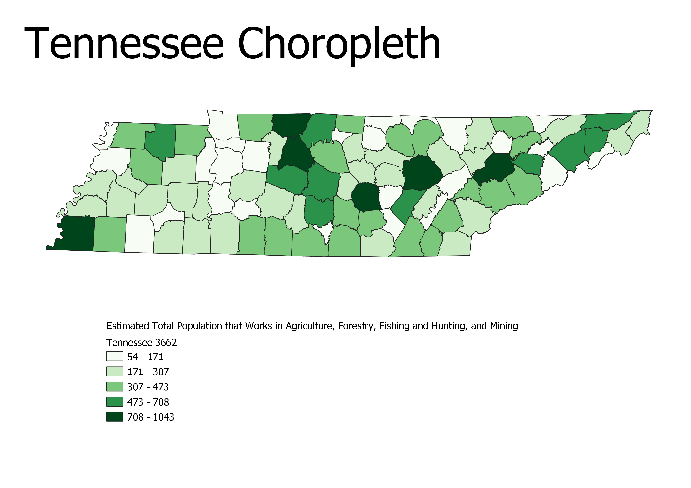

Homework 7: Census Data Choropleth
Leanna Mahle - 730323194
This map is a description of the total number of individuals who work in the agricultural, forestry, fishing, hunting, and mining industries. The number of individuals who work in these industries have shifted around in the past years. Industries like agriculture have grown due to continuous population growth but others like mining have shrunk. Overall; however, there are not many left in any of these industries because we live in a economy that is increasingly interested in technological advances and not labor production.

Data used for this project
CSV dataset
Link to shapefile